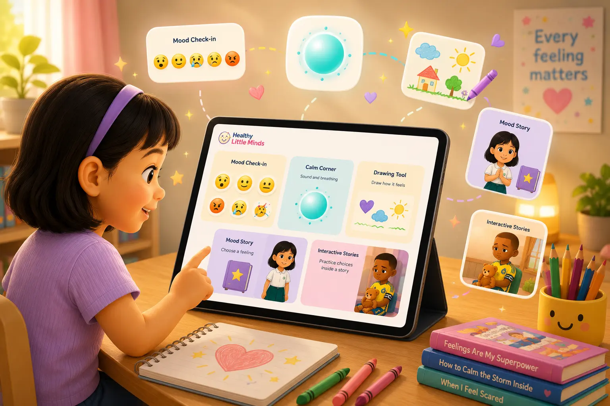
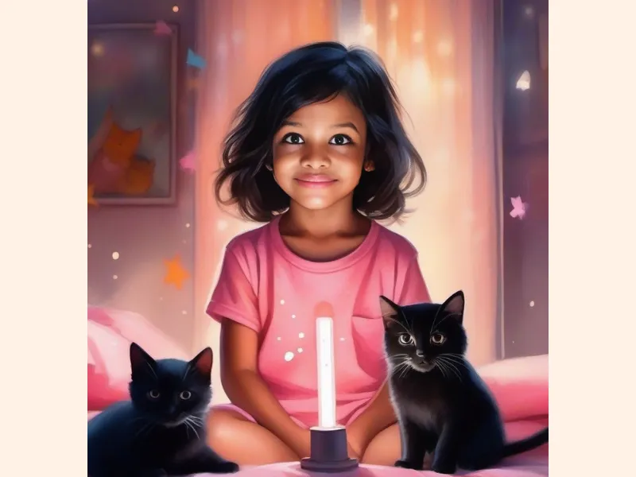

좋은 첫걸음
진정 도구를 사용해 보세요
호흡, 부드러운 소리, 그림 그리기로 몸과 마음을 먼저 천천히 가라앉혀 보세요.
작은 마음을 따뜻하게 준비 중입니다…
라이브러리에 다시 오신 것을 환영해요
이야기, 워크시트, 감정 도구와 따뜻한 도움을 나만의 속도와 방식으로 살펴보세요.
Healthy Little Minds 시작하기
감정을 골라 이야기를 읽거나, 활동지를 내려받거나, 아이를 돕는 주제별 자료를 찾아볼 수 있어요.
선택 도우미
누구를 위한 것인지, 지금 어떤 일이 있는지, 어떤 도움이 필요한지 고르면 이야기, 도구, 활동지, 보호자 가이드로 바로 이동합니다.
감정 도구 체험하기
감정 선택하기

감정 도구 체험하기 → 감정 선택하기
👉 옆으로 스크롤하거나 오른쪽으로 넘겨서 더 많은 책을 살펴보세요
계속 둘러보기
감정 연습에서 가정과 교실 지원까지, 오늘 필요한 길을 선택해 보세요.

일상 속 정서 문해력
정서 학습은 한 번의 큰 수업으로 끝나지 않습니다. 지금 일어나는 일에 이름을 붙이고, 도움이 되는 대처 방법을 연습하며, 믿을 수 있는 어른과 연결되어 있는 작은 순간들을 통해 자랍니다.
아이들이 감정에 이름을 붙일 수 있으면, 어른은 더 인내심 있게 반응할 수 있고 아이도 마음속에서 일어나는 일을 혼자 감당하지 않아도 됩니다.
감정 살펴보기숨 쉬기, 그림 그리기, 잠시 멈추기, 도움 요청하기 같은 간단한 방법은 평온할 때 연습할수록 필요한 순간에 더 쉽게 사용할 수 있습니다.
워크시트 열기Healthy Little Minds 자료는 부끄럽게 하거나 재촉하거나 성급히 바로잡기보다, 어른이 안내하고 귀 기울이며 아이와 함께 감정을 조절하도록 돕기 위해 만들어졌습니다.
부모 지원 보기새로운 그림책, 워크시트, 부모님을 위한 도움 자료가 올라오면 이메일로 알려드릴게요.